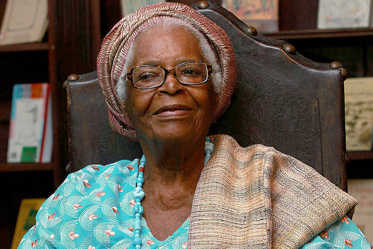

Exposição Consciência Negra
Religiosidade e Cultura Ancestral

Mãe Stella de Oxóssi
(Salvador, Bahia, 1925–2018)
Ialorixá do Ilê Axé Opô Afonjá, rompeu barreiras ao escrever livros sobre a tradição dos orixás, desmistificando as religiões de matriz africana. Em 2013, tornou-se a primeira liderança de candomblé a ocupar uma cadeira na Academia de Letras da Bahia.
Obras e Projetos de Destaque
- Obras Literárias Pioneiras: Autora de livros fundamentais como Meu Tempo é Agora (1993), Ọ̀sọ́ọ̀sì: O Caçador de Alegrias (2006), Owé: Provérbios (2007) e Epé Laiyé: Terra Viva (2014).
- Escola Municipal Eugênia Anna dos Santos: Fundou no Afonjá a primeira escola municipal pública a incluir o ensino formal da história afro-brasileira e da língua iorubá no currículo escolar.
- Museu Comunitário Ilê Ohun Lailai e Biblioteca: Idealizou o museu no terreiro para preservação pública de peças sacras históricas e a biblioteca comunitária voltada aos estudos afro-brasileiros.
- Academia de Letras da Bahia: Eleita para a Cadeira nº 33 da ALB, consagrando a tradição oral e a reflexão teológica do Candomblé no cânone letrado da Bahia.